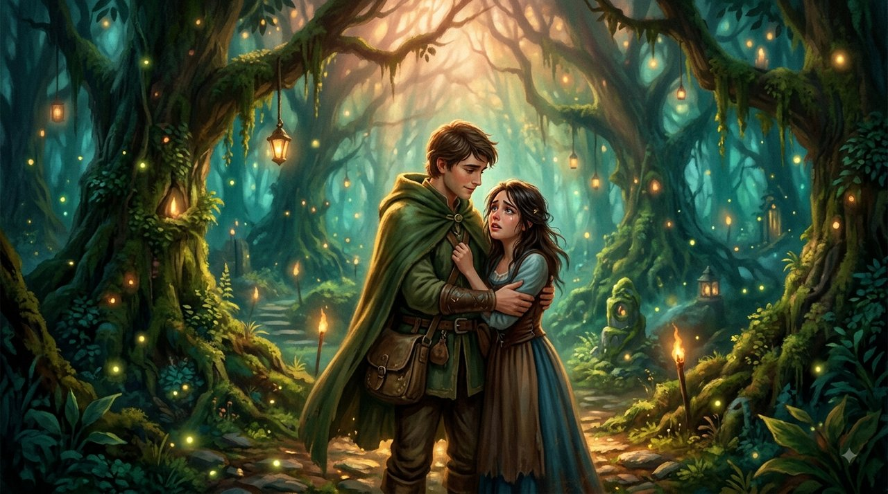
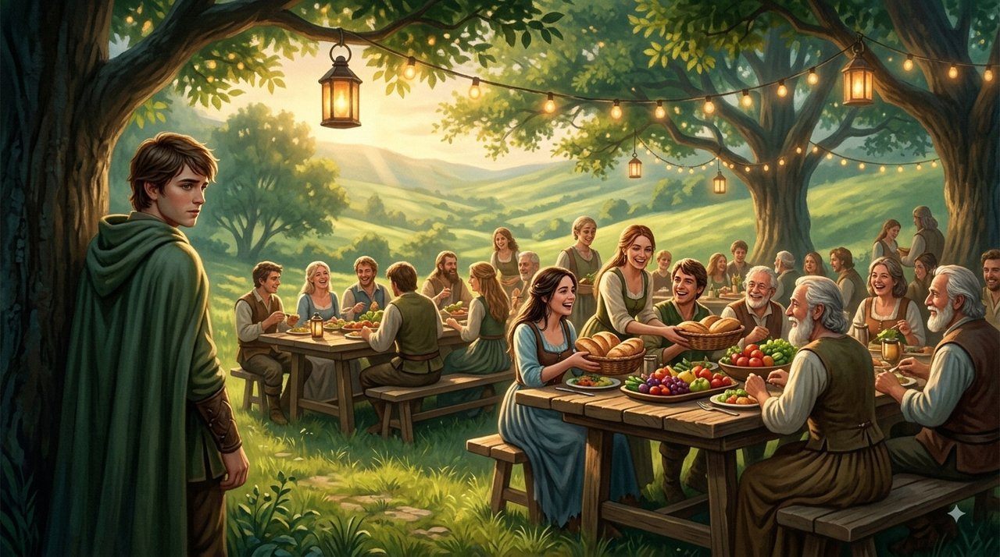
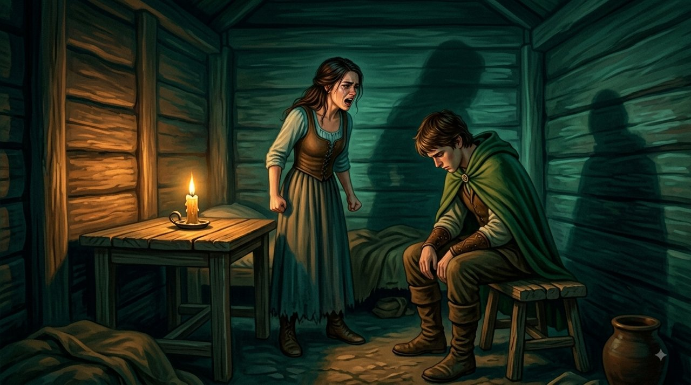
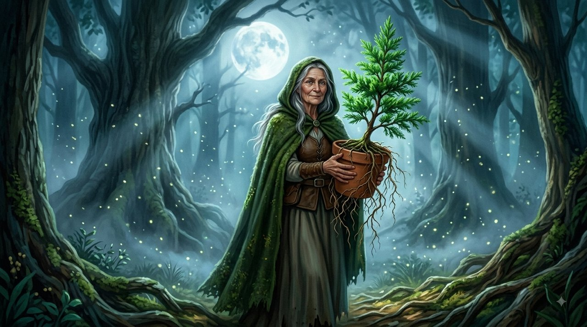
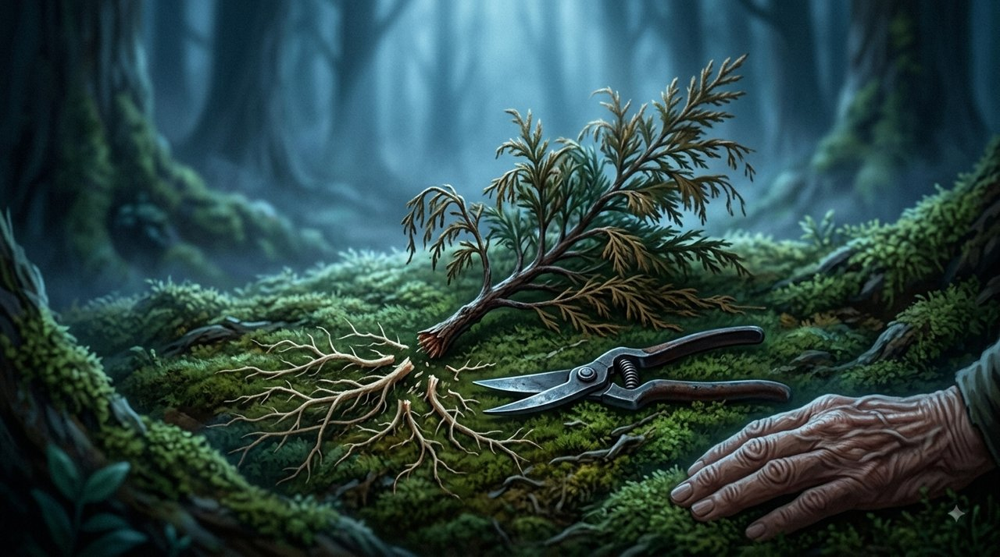

在翡翠森林王国，俯瞰银河的悬崖上，住着阿里安和米拉。米拉是一个内心汹涌而疼痛的女人；她心里装着一段旧日被抛下的记忆，以及一种深深的恐惧：没有人真正爱她。而阿里安则用整个灵魂爱着她，出于深沉而真挚的承诺选择了她作为伴侣。

阿里安在这个王国里根系很深。他的家族、兄弟和整个宗族都住在邻近的山谷里。他们是朴实的劳作之人，热情而亲密。可在米拉眼里，阿里安与家族的每一份牵系都是对她生存的直接威胁。她把他兄弟的问候看作变相的羞辱，把他们的家族喜庆看作意在把阿里安从她身边引开的阴谋。
每当阿里安下山谷去问候兄弟或与他们同庆，米拉就爆发出一场泪与怒的风暴："你不在我这边！如果你真爱我，你连他们呼吸的空气都不会去呼吸。去他们那里就是对我、对我经历过的一切的背叛。你在我的灵魂和我的敌人之间选择了他们！"
阿里安拼命想让她安心，想向她证明她是唯一，于是开始一样样地割舍。先是不再去参加节庆的宴席。接着在小路上遇见兄弟时避开他们的目光。每割断一根牵系的丝线，他都盼着米拉能平静下来，终于觉得安全。可她心里的火并没有熄——它只是要更多、更多的证明。
山谷里的婚礼

有一天，一个信使来到他们家，宣告阿里安的弟弟要成婚了，整个宗族都盼着他去婚棚下祝福。米拉站在门口，脸色苍白，眼里带火："如果你迈出这道门槛，下山去参加他们的婚礼，你就没有地方可回了。你这是把我们判了分离。你是个背信的丈夫，宁要自己的家族，也不要为你舍弃了一生的女人！"
阿里安心碎神伤，坐在自家门槛上。他的心在对米拉的爱和血脉之间被撕成两半。
护林人与雪松

那天夜里，年迈的护林人、飞鸟的看护者出现在屋边。她看见弯着腰的阿里安，也看见在昏暗屋里因愤怒与恐惧而颤抖的米拉。老人从行囊里取出一只小花盆，里面是一棵年轻美丽的雪松。
"看看这棵树，"她对他们两人说，"它强壮，枝叶宽展，能给人遮荫、庇护，能在风暴里做屏障。"
接着老人转向米拉说："米拉，你要阿里安只做你一个人的盾。可是为了证明他只保护你，你要求他斩断自己在土里所有的根，切掉家族的枝，烧掉他生长出来的那片林子。"

老人拿起一把剪子，一根接一根地剪掉小树所有的根，直到只剩下一截光秃秃、颤巍巍的树干。她把它放进米拉手里。片刻之间，枝条垂下，叶子发黄，树就毫无生气地倒了。
"爱不是抵制，忠诚也不是要求毁掉另一个人的世界，"老人对米拉低声说，而这女人的眼里已满是震惊的泪，"一个被你剪断了根的人，是无法在风暴里站住并保护你的。他会变成自己空洞的影子。凡要求伴侣用绝交、仇恨和与家族的决裂来证明爱的人，他要的不是盟约——他要的是自己孤独牢房里的一个狱友。"
米拉看着手中那截枯死的树干，然后抬眼望向阿里安。她第一次看见的不是一个反抗她的"敌人"，而是一个被她那些不可能通过的考验压得一无所剩的、爱着她的男人。
真正的安全感与真正的爱，不建立在其他牵系的废墟上，而建立在让你所爱的人完整地繁茂的能力上——带着他所有的根，和他所有的枝。